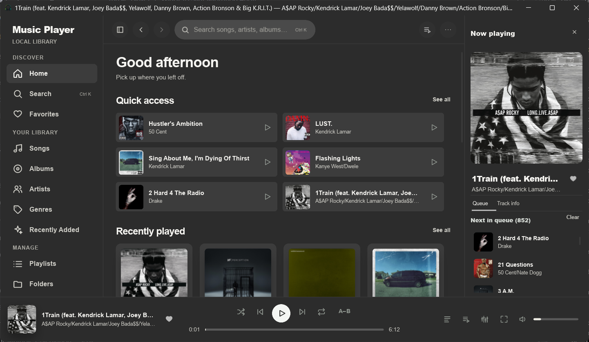
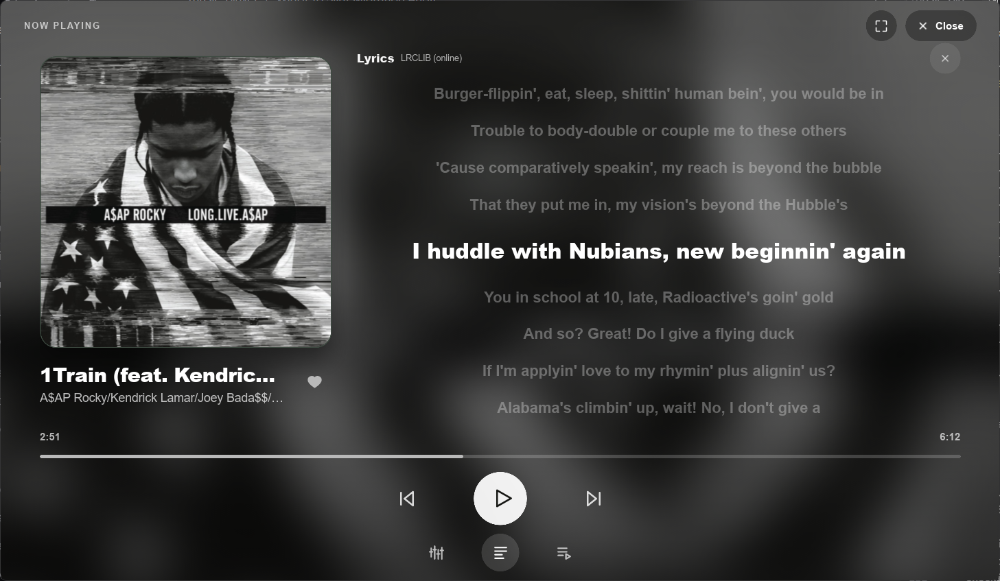
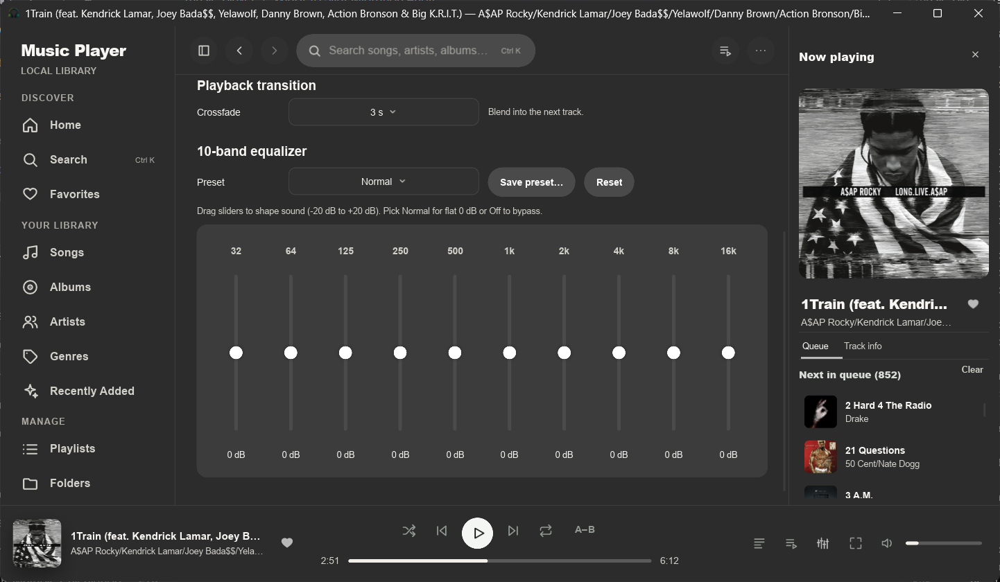
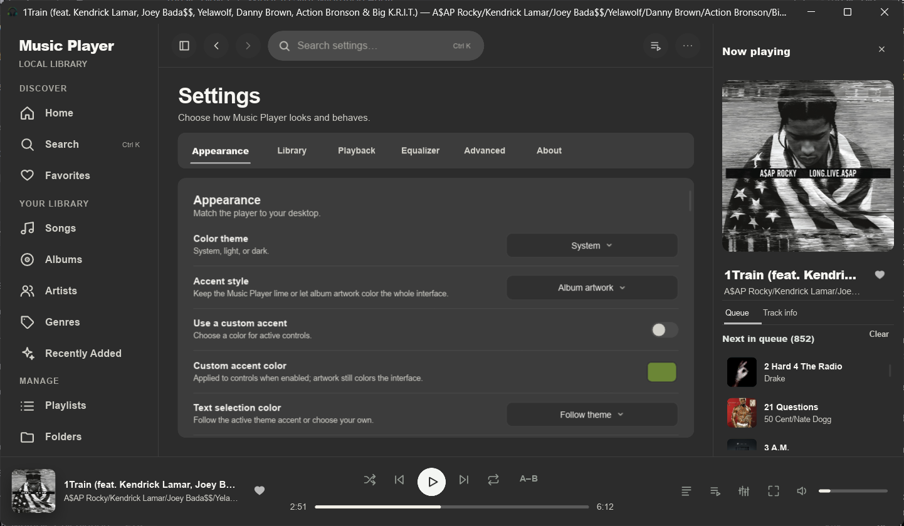

Fast Incremental Scanning
Scans 19 audio formats using timestamp + size fast paths and watches folders live for additions or edits.
A lightweight Windows desktop player with incremental library scanning, a 10-band equalizer, dual-player crossfading, synced lyrics, safe tag editing, and a dedicated video window.
Windows 10 (1809+) & Windows 11 (x64) · Bundled LibVLC · Zero accounts, telemetry, or WebView2 runtime required.

Everything stays on your machine under %LOCALAPPDATA%\MusicPlayer with zero background cloud sync.
Scans 19 audio formats using timestamp + size fast paths and watches folders live for additions or edits.
20 built-in EQ presets, preamp control, Windows audio output routing, and 2–10s dual-player audio crossfade.
Opt-in video scanning or direct Explorer open with sidecar/embedded subtitles, speed control, and PNG snapshots.
Prioritizes timed .lrc sidecars and embedded lyrics, with optional on-demand LRCLIB search and sync editor.
Edit metadata tags across supported containers with automatic byte-for-byte backups before atomic replacement.
Switch between Dark, Light, Artwork-Adaptive palettes, custom selection colors, and adjustable window transparency.
A closer look at the immersive lyrics view, 10-band equalizer, and appearance customization.



Press F1 or ? anytime inside the app to open the shortcuts reference.
| Shortcut | Scope | Action |
|---|---|---|
| Space / Enter | Main & Video | Play or pause playback |
| Left / Right | Main & Video | Seek −5s / +5s (hold Shift for ±10s) |
| Ctrl or Alt + Left / Right | Main Window | Previous / Next track |
| Up / Down | Main & Video | Volume ±5% (Shift for ±10%) |
| M | Main Window | Mute / restore volume |
| S / R | Main Window | Toggle shuffle / cycle repeat mode |
| L / I | Main Window | Toggle Lyrics view / Immersive Now Playing |
| Ctrl + K | Main Window | Focus global search |
| F11 | Main & Video | Toggle fullscreen |
| Esc | All Windows | Close popup/modal or exit fullscreen |